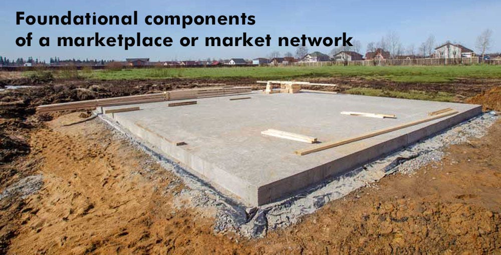

Jun 19, 2020
Foundational components of a marketplace or market network

At a foundational level, a marketplace or market network has participants that can be people or systems. Each participant has an operations model which describes how the participant will operate into the marketplace, a relationship model which define the relationship possible between each couple of participants, a resources base which is all asset that participant can use that can tools, funds, devices,…. An Autorisation layer which defines each participant level of access to resources base and its possibilities of operations and relationship. each of these components should be constrained according to the Given goal of the marketplace owner’s goals. What is your goal with your marketplace? Every one of us holds a marketplace.